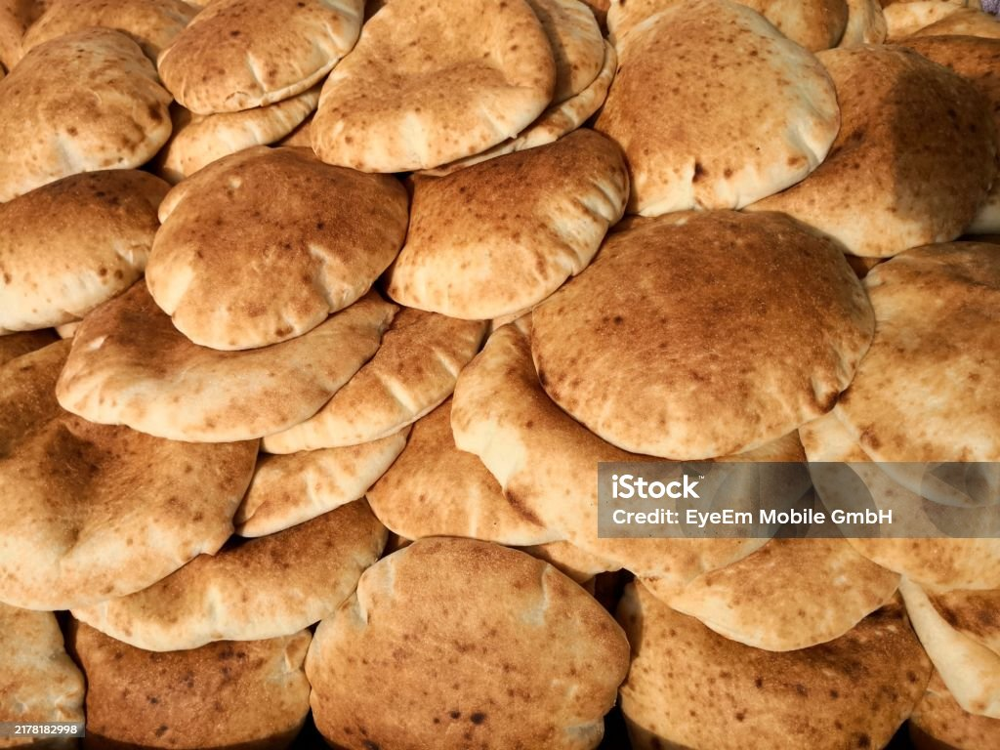
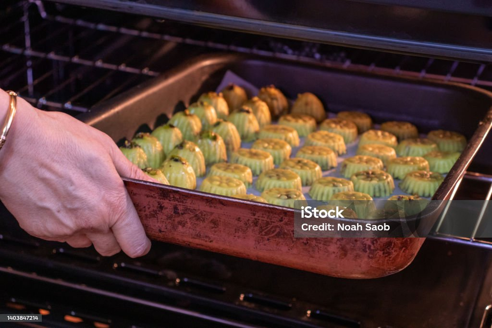
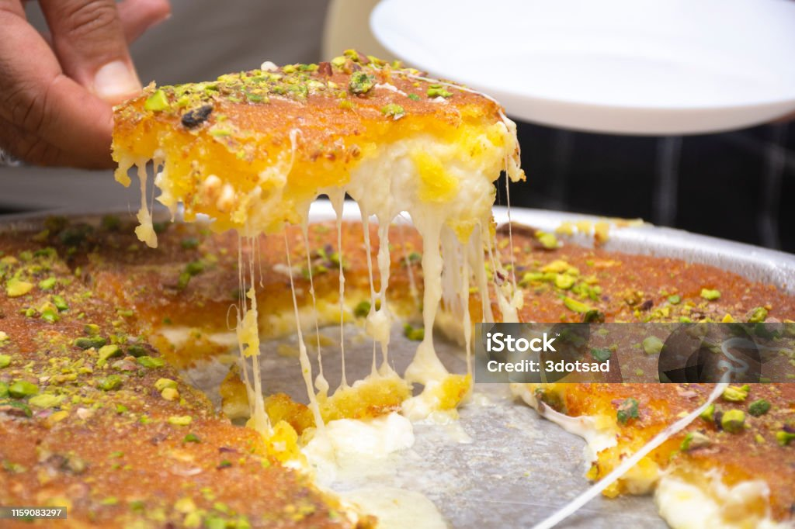
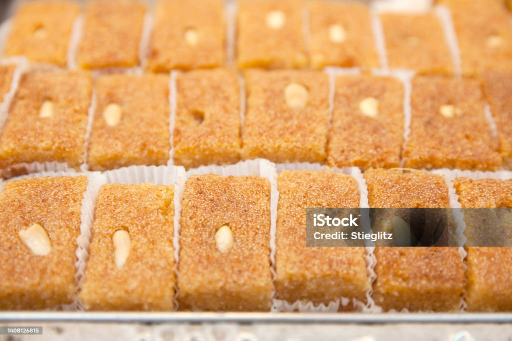
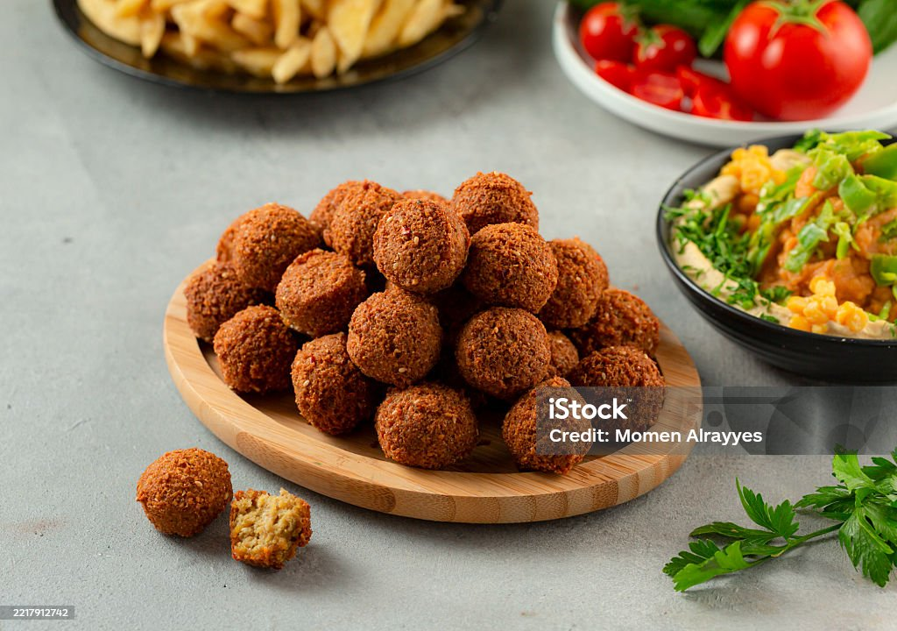
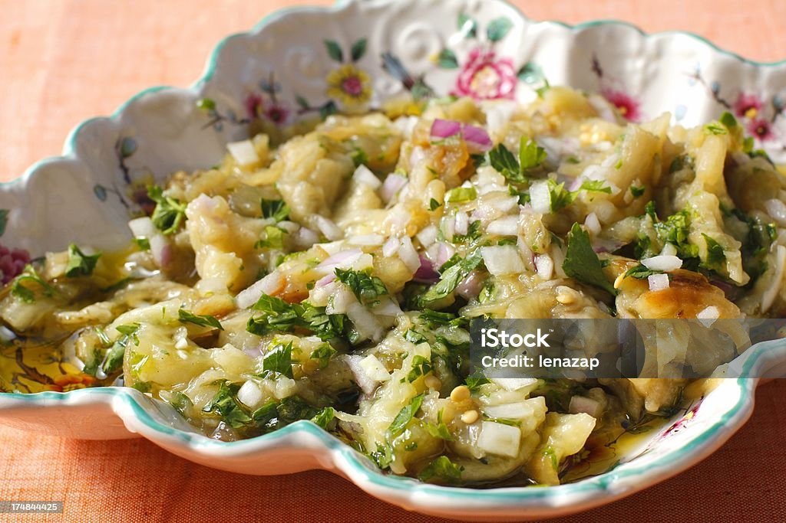
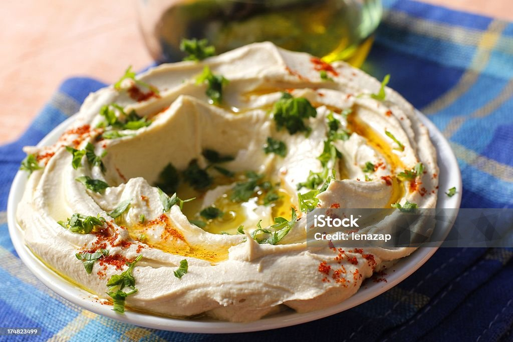

كل الوصفات التراثية
من غزة للقدس، ومن يافا للخليل.. كل الحب في أطباقنا التراثية


فطير السبانخ
معجنات ذهبية هشة محشوة بالسبانخ الطازج مع السماق البلدي وزيت الزيتون، تجسد دفء البيوت الفلسطينية في مواسم الخير
رؤية الطريقة

خبز الطابون
الرغيف الذهبي المخبوز على الحجارة الساخنة، رفيق المسخن واللبنة البلدية، وعنوان الكرم في كل بيت فلسطيني
رؤية الطريقة
المنسف الفلسطيني
المنسف هو سيد الموائد ورمز الكرم والشهامة؛ كانت تيتا تقول 'المنسف بدو صدر واسع ونفس طيبة'. السر دايماً في اللحمة البلدية اللي بتذوب بمرقة الجميد، ولمة العيلة والضحكة الصافية حوالين السدر هي اللي بتعطي الأكلة طعمها الحقيقي.
رؤية الطريقة
المجدرة الفلسطينة
أكلة البركة والأصالة، مزيج من العدس والبرغل المطبوخ بزيت الزيتون والكمون، ومزين بالبصل المقرمش.
رؤية الطريقة
المفتول الفلسطيي
لؤلؤ المطبخ الفلسطيني، حبيبات القمح المفتولة يدوياً والمطبوخة على بخار مرق الدجاج والحمص مع دقة عين الجرادة الأصيلة.
رؤية الطريقة

معمول
حبات ذهبية محشوة بالحب والبركة، تذوب في الفم لتنقل لك طعم الأعياد الفلسطينية الأصيلة بنكهة السمن والمحلب
رؤية الطريقة
القرشلة الفلسطينية بالسمسم
مقرمشات فلسطينية تقليدية، غنية بنكهة اليانسون والشومر، مصنوعة بحب لتكون الرفيق الأمثل لكوب الشاي الدافئ.
رؤية الطريقة
الغريبة الفلسطينية الهشة
حلويات تراثية ناعمة كالحرير، تذوب في الفم لتترك أثراً من أصالة الضيافة الفلسطينية في كل قطعة
رؤية الطريقة

كنافة نابلسية
أسطورة الحلويات الفلسطينية، مزيج مذهل بين ملوحة الجبنة النابلسية وحلاوة القطر، تقدم ساخنة لتعكس كرم الضيافة في أبهى صورها
رؤية الطريقة

بسبوسة
هريسة السميد الذهبية بجوز الهند، محلاة بالقطر الفواح، تعيد إليك ذكريات الجمعات العائلية البسيطة والدافئة
رؤية الطريقة
مناقيش
أقراص العجين الذهبية المحشوة بعبق الزعتر الفلسطيني والجبنة البلدية، فطور الأصالة وريحة البلاد في كل لقمة
رؤية الطريقة

فلافل
كرات الحمص الذهبية المتبلة بالأعشاب والبهارات، عنوان الفطور الفلسطيني الشعبي، ومصدر القرمشة واللذة في كل ساندويشة
رؤية الطريقة

متبل الباذنجان المشوي
طبق المقبلات التراثي المصنوع من الباذنجان المشوي والمدخن، الممزوج بالطحينة البلدية والليمون، ليعطي طعماً غنياً لا يقاوم
رؤية الطريقة

الحمص الفلسطيني بالطحينة
طبق الحمص الكريمي الناعم المحضر على الطريقة التقليدية، بلمسة الطحينة والليمون وزيت الزيتون الفلسطيني الأصيل
رؤية الطريقة
دُّقّة غزاوية
الخلطة التراثية الأصيلة من القمح المحمص والسماق وعين الجرادة، رفيقة زيت الزيتون في الفطور الفلسطيني وسر النكهة الغزاوية المميزة
رؤية الطريقة
البصارة الفلسطينية
طبق الأجداد القديم، مزيج تراثي من الفول المدشوش والملوخية الناشفة مع قدحة الثوم والريحان وزيت الزيتون.
رؤية الطريقةهل لديكِ وصفة سرية من "تيتا"؟
شاركينا وصفات عائلتك لننشرها باسمك ونحافظ على تراثنا!
أضيفي وصفتك الآن